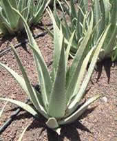
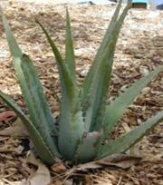
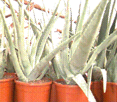
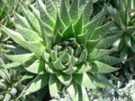
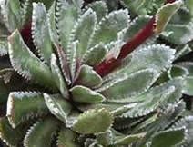
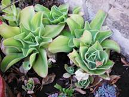

|
Aloe Vera - Sábila
LA ROSA DE LA SALUD
ALOE SÁBILA
“Si ignoras el NOMBRE de las cosas, desaparece también lo que sabes de ellas”.
Dijo: Carlos Linneo quien la clasificó en 1755.
al sol |
En sombra |
en materas |
|  |  |  |
“ALO, ALO, ¿ALGUIEN POR ACÁ? hablemos de la MAGIA hecha PLANTA, la que llaman con muchos Nombres vulgares y comunes en Español, y la misma que ofrece sus servicios, de la letra A hasta la Z, la llaman ALOE VERA, por eso la debemos saludar
¡ALO! bella y Mágica Amiga!
¡Gracias a Dios Existes!
Su Nombre es ALOE VERA, pero también le dicen Sábila ó Zábila, o sea nombres masculino y femenino, con apellido muy importante, ALOE VERA, como quien dice en italiano, que es VERDAD, y si la llamamos Sábila sin L, es la planta SABIA, cuyas hojas, color VERDE ESPERANZA forman un rosetón.
El Aloe, ungió el cuerpo de JESÚS, según el evangelio de San Juan 19,39.
Podríamos llamarla, La Rosa de la Salud, rosa verde con perfume de Esperanza, hojas y espinas abiertas para descifrar secretos, laberintos y jeroglíficos. Su esencia y magia es Interna, con alma de bellos cristales diamantinos, amargo sérver, acíbar y aloína, que florece demostrando madurez.
Su sencilla apariencia, se adapta y crece en tacitas de barro, envases reciclables, macetas elegantes o grandes jardines, dando salud, curando dolores, suavizando malestares, aliviando quemaduras y radiaciones.

La más pequeña, la humilde roseta de hojas verdes, es la ideal cerca a los aparatos electrodomésticos, por ser la recolectora de sus radiaciones, apropiada para colocarla cerca del PC, radio, televisión, hornos, ella absorbe el 90 por ciento, de la toxicidad de las radiaciones de ondas y rayos electromagnéticos, posee reequilibrante magnético, por eso La NASA la elige cerca de ordenadores, televisión y otros aparatos, así como materiales en PVC, Fibra de Vidrio, Barniz, Pintura, corima lo ha comprobado, al ver su radiante crecimiento cerca al PC.
Un incidente doloroso de la Segunda Guerra Mundial, redescubrió el poder terapéutico del ALOE, se comprobó que los habitantes de Hiroshima y Nagasaki, después de un tratamiento con Aloe, se curaban más rápidamente de sus terribles dolores y quemaduras, les aliviaba el dolor y en muchos casos no quedaban señales, ni cicatrices, se considera una de las mayores regeneradoras celulares que ha dado la Naturaleza, por sus efectivos y bellos cristales.
Muchos documentos históricos egipcios, romanos, griegos, argelinos, marroquíes, tunecinos, árabes, indios y chinos, informan sobre su empleo con propósitos curativos y cosméticos como los que usaba la bella Cleopatra.
Dicen que es de la India, del África, crece en Sur América, en mi Bella Colombia, y algunos la llaman Sábila con S, otros Zábila con Z. Nace en Norte América, en Estados Unidos al sur de Tejas, en la Florida, sur de California, Méjico, América Central, el Caribe, en Barbados, Canarias, sur de Europa, en el Desierto, a lo largo del Pacífico, en Australia, África, y crece en todas las áreas tropicales!
Hoy, ALOE VERA es INTERNACIONAL, crece en todo el mundo y su conocimiento crea nuevos productos, empresas y produce platica en todo el mundo moderno.
Mis amigos Indígenas que habitaron mi BELLA COLOMBIA, la apreciaron tanto, que la consideraron la protectora de la buena suerte, decían los amparaba en sus hogares, trueques y salud, le tenían mucha fe, era la maga que todo lo curaba y les evitaba las malas intenciones de visitantes, decían que detectaba y absorbía la energía extraña y negativa.
Decían que poseía muchos poderes, ahuyentaba lo malo, evitaba amarguras, y disgustos, sin dejar cicatrices. Por costumbre le ponían lazos rojos, para llamar el amor, y lazos verdes para la suerte, la colgaban por las raíces a la entrada de parcelas y sembrados, o para sus intercambios y haberes y sentirse protegidos. Sólo que su ingenuidad no contó, ni captó, con la maldad del ser humano, de la que tantos ejemplos nos habla La Biblia y La Historia.
|  |  |
Corima debe confesar públicamente que no existe talismán, cuarzo, joya, contra, amuleto, fetiche, reliquia, horóscopo, medalla, planta o símbolo, capaz de proteger de la maldad del ser humano… La mala o buena suerte, dependen de la elección humana, en el manejo de su libre albedrío…
La historia ha demostrado lo que JESÚS nos sugirió: El que busca encuentra, no hay nada oculto, ni secretos que se puedan esconder.
SÓLO LA PROTECCIÓN Y EL PODER DE DIOS NOS LIBRARÁN DEL MAL.
Nos lo repitió en el Padre Nuestro: “Líbranos del MAL”. Así Sea=AMEN.
En GOOGLE e Internet encontrarás científicos, médicos, homeópatas y expertos que han estudiado Aloe Vera, Sábila ó Zabila, corima te incluye un resumen!
CALIFICATIVOS DE LA SÁBILA - La Rosa de la Salud, rosa verde con perfume de Esperanza (Corima)- Planta de las Quemaduras - Planta Medicinal - Planta de Primeros Auxilios - Hormona de las Heridas (freytag) - La Milagrosa Planta - El Aloe Humectante Natural - Maravillosa Planta - Planta Decorativa - Remedio Milagroso para la Quemaduras -Hierba Sagrada, Generadora de Buenas Vibraciones - Kumasi Cúralo todo de la Medicina Tradicional - Cola de Dragón - Curandera – Babosa – La Silenciosa – Planta Milagrosa – Pulpo - Bilis de Elefante - Lirio del Desierto (Los Africanos)- Planta de la Inmortalidad - Planta que Cura - Acíbar o Musobar - El Sanador Silencioso (Los Americanos)- Doctor Aloe (Los Americanos) - Elixir de Vida - (Los Rusos) El Doctor Vegetal - Su Majestad la Sábila - WWW.SABILAALOEVERA.COM
Ya Aloe Vera la conocen en todos los idiomas y también la llaman; Aloe de las Barbados, Aloe barbadensis, Lirio de Pascua, Zabida o Zabira o Zadiba o Pita zabila en castellano, Azebre vegetal, Erva, Aloé, Babosa, Aloe vulgaris, Aloe percrassa, Aloe schimperi, en gallego y/o portugués, Belarrmintza en vasco, Ghrita-kumari en sánscrito, Lu-hui,o Siang-tan en chino, West indian, aloe, Zanzíbar, Barbados aloe, Curacao aloe.
En inglés, Àloe, Atzavara vera, Séver en catalán, Banushtaki, Ghi kanwar en hindi, Liliaceae de familia, Al^alk, Siber en Marruecos… Algunos le atribuyen y conocen, por el sentido místico del aloe, dicen tiene poder de purificar el alma, porque se asemeja al Lirio de Pascua, en España.
Del ABCDE hasta la Z: Antiinflamatoria, Bactericida, Cicatrizante, Digestiva, Estimulante, aún Zanjar picaduras de zancudos.
El análisis químico ha revelado que el gel del Aloe Vera contiene, aminoácidos, estimuladores biológicos, proteínas, polisacáridos, vitaminas, y propiedades bioquímicas que hoy en día son hechos comprobados, 92 enzimas absorben los alimentos básicos y a la vez los purifica. Contiene varios minerales, calcio, cobre, fósforo, magnesio, potasio, sodio, zinc, germanio, imprescindibles en cada uno de los procesos fisiológicos.
Las milagrosas hojas de Sábila, contienen más de 75 componentes nutritivos, incluyendo 20 minerales, 18 Aminoácidos y 12 Vitaminas. El germanio, es muy importante a causa de su papel catalizador, comparable al de la clorofila. Talvez por eso los que estudian el alma de las especies vegetales dicen que reúne casi todas las maravillosas propiedades y fundamentos curativos para todo, como la de un antiinflamatorio similar a la cortisona, pero sin efectos negativos.
De la A a la Z: Sus efectos son útiles en la prevención como vacuna ideal para evitar acné, arrugas, artritis reumática, asma, angina de pecho, arteriosclerosis, bronquios, caspa, cataratas, cáncer, colitis, cosméticos, combate la anemia, conjuntivitis, cuidado del cutis, cabello, cálculos o piedras en el riñón, cuida uñas, cicatrices, diabetes, disentería, encías, epilepsia, estreñimiento, escaras, esclerosis, esquizofrenia.
Filtro solar, forúnculos, fungicida, glaucoma, gases, herpes labial, hipertensión, hongos, Infecciones renales, infartos y embolías, jaquecas, leucemia, llagas, manchas en la piel, nervios, oídos, ojos, osteoporosis, protectora de rayos ultravioletas, palpitaciones, purgante, quemaduras, reduce costras y picazón, rasguños.
Sinusitis, tensión alta, úlceras, urticarias, varices, estimula la tiroides perezosa y disminuye las radiaciones electromagnéticas de los efectos malignos causados por los aparatos eléctricos.
El jugo de Aloe Vera es la más asombrosa mezcla de antibiótico, cicatrizante, agente coagulante, inhibidor del dolor y estimulante del crecimiento de los tejidos que conocemos de la naturaleza, así como muy nutritiva al lavarnos la cabeza con sus cristales.
Es descongestionante, calmante y un excelente filtro solar contra la radiación ultravioleta ante las úlceras, y quemaduras casi incurables, producidas por los rayos X, o radiaciones atómicas.
El Nombre aloe vera, deriva probablemente de un vocablo griego que significa mar, quizás aludiendo a que la planta, en su estado natural, posee la inmensidad en todas sus cualidades. Otros dicen que deriva del árabe (olloech o alua) o del hebreo (halat), vocablos que hacen referencia al sabor amargo. Penetra en la piel cuatro veces más rápido que el agua, existen más de 250 especies de áloe.
Finalmente esta receta mágica la da Fray Romero de Butén, un franciscano brasileño, de sonrisa fácil, ojos inquietos y trato fiable, no es taumaturgo, ni curandero, ni médico, es maestro del seminario de Belén, su fama se va extendiendo, dicen ha curado cáncer de piel, cerebro, mama, pulmón, próstata, garganta, leucemia y la esclerosis.
La llama Florecillas de Tierra Santa. Dice: "Yo curo el cáncer, tú puedes curar el cáncer, y cualquier persona que lo quiera lo puede curar, sin hacer milagros, simplemente aplicando los elementos que nos produce la naturaleza. La naturaleza tiene remedios, para curar las enfermedades. ¡Basta descubrirlos".
Y da la receta: "Medio kilo de miel pura de abeja, dos hojas grandes o tres pequeñas de la planta llamada Aloe Vera, tres cucharadas de coñac o whisky, o tequila o aguardiente. Se quita el polvo y las espinas del Áloe, se corta en pequeños trozos, y se introducen todos los elementos en la batidora.
Esperar hasta que se haga una pasta viscosa, y ya está listo el remedio para curar el cáncer. Se prescribe tomar una cucharada grande tres veces por día, un cuarto de hora antes de cada comida, y esto durante diez días.
Antes de tomar el brebaje Fray Romero, aconseja agitar bien el frasco y haber pasado varias horas en ayunas con el fin de que las Pepsinas del organismo ansíen entrar en acción y el medicamento puede penetrar fácilmente en todos los tejidos del cuerpo.
El brebaje purifica el organismo por medio de la miel, alimento que llega a los órganos más alejados; el Áloe, tiene un gran poder cicatrizante y el alcohol dilata los vasos sanguíneos. Por este medio la sangre se purifica lentamente en diez días".
Advierte que si después de haber tomado la bebida, salen abscesos en la piel, buena señal. La sangre se está purificando, no afanarse si hay que visitar el cuarto de aseo y si el primer tratamiento no produce efecto..
"El paciente debe someterse a una nueva serie de exámenes para ver si hay necesidad de una segunda vez, tercera o cuarta dosis, hasta la curación total".
Desde hace seis años, el Padre Franciscano está usando esta receta con óptimos frutos. Ha curado a varias decenas de personas de Belén y alrededores, entre ellas a una desahuciada de los médicos.
Le preguntan qué clase de cáncer cura, y dice: "El remedio que prescribo no sólo cura el cáncer, sino que también lo previene. Cura el cáncer de la piel, del cerebro, de la próstata, del pulmón, de la garganta, la leucemia, etc.".
También cuenta que últimamente ha curado a una religiosa Italiana de 29 años, enferma de esclerosis. "Por ahí anda trabajando y moviéndose sin problemas", dice Fray Romano - no se opone a que le publiquen su fórmula, "Pues no cobra por la receta, prolongar la vida de una persona, da una satisfacción inmensa".
(Entrevista de Ignacio Peña - Comisaría de Tierra Santa - C/ Bartolomé Mira 3461 - 1201-Buenos Aires).
Vio Dios que todo cuanto habia hecho era muy bueno
Génesis 1,31